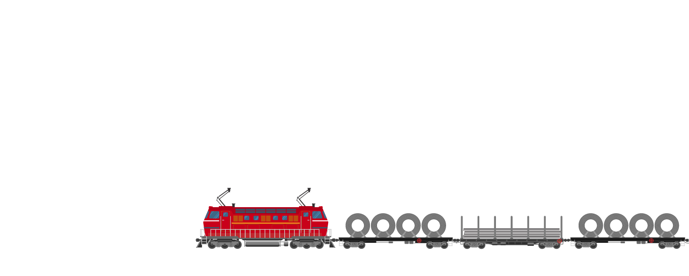
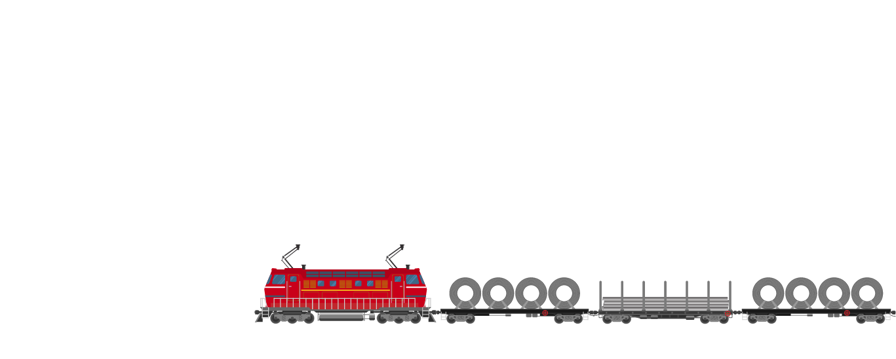

The new line, with its intricate planning on the PM GATISHAKTI National Master Plan, will ease freight traffic congestion on existing transport routes and bring seamless rail connectivity to major Eastern Ports. This would provide easier raw material access, freight movement, export of minerals, movement of goods, and marine traffic, improving global competitiveness.

- About
- Approach
-
Case Studies
- Pune Bengaluru Expressway
-
Schools in unserved areas
of Uttar Pradesh (PAHUNCH program) - Strengthening of the railway, line between Bhadrak and Vizianagaram
- Jogighopa Multimodal Logistics Park
-
National Industrial Corridor,
Dholera (Node), Gujarat -
Indo-Nepal Border Haldia
access controlled corridor -
Green Energy Corridor between
Ladakh and Haryana -
Electronic - Detailed Route Surveys
(e-DRS)
- Impact Visualization


 
